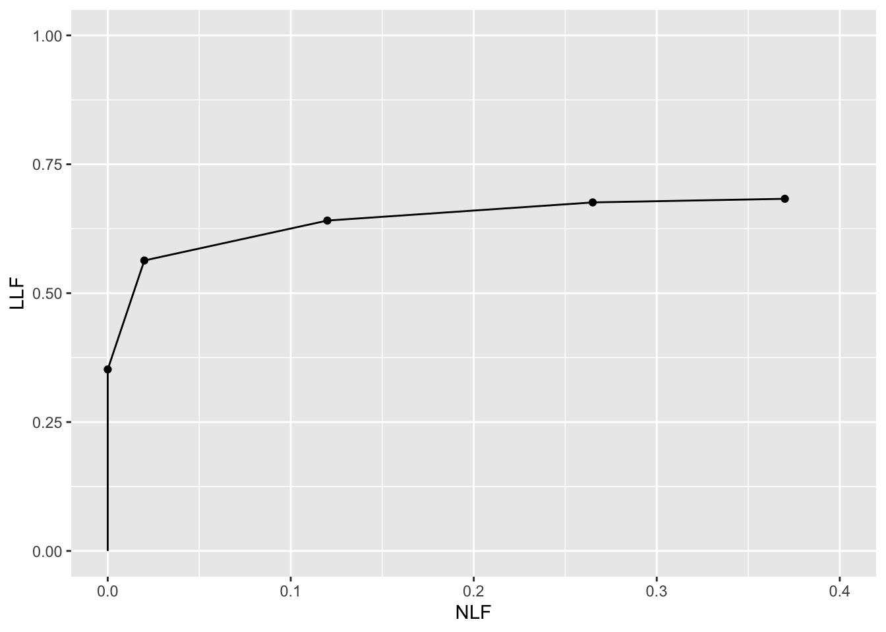
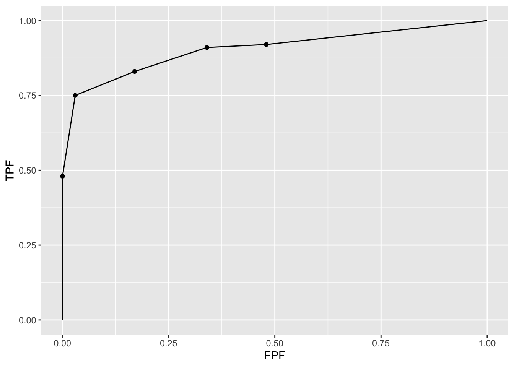
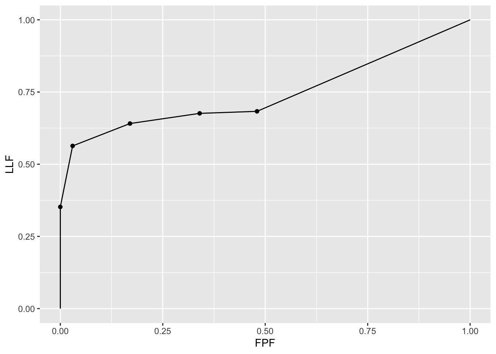
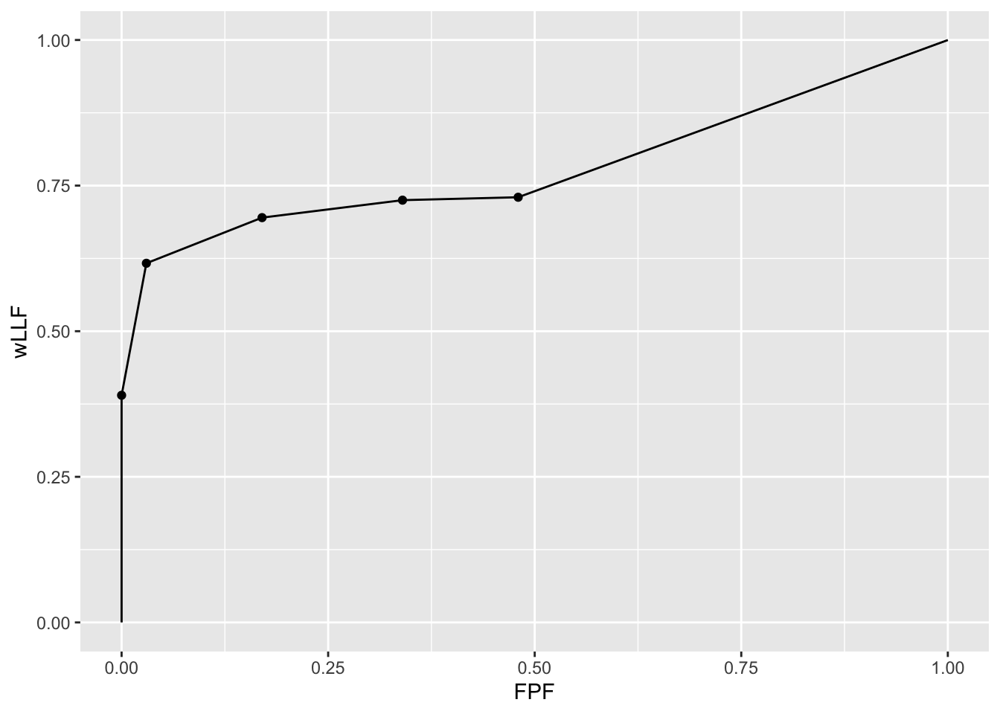
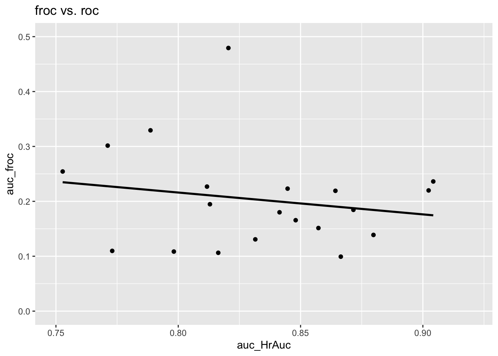
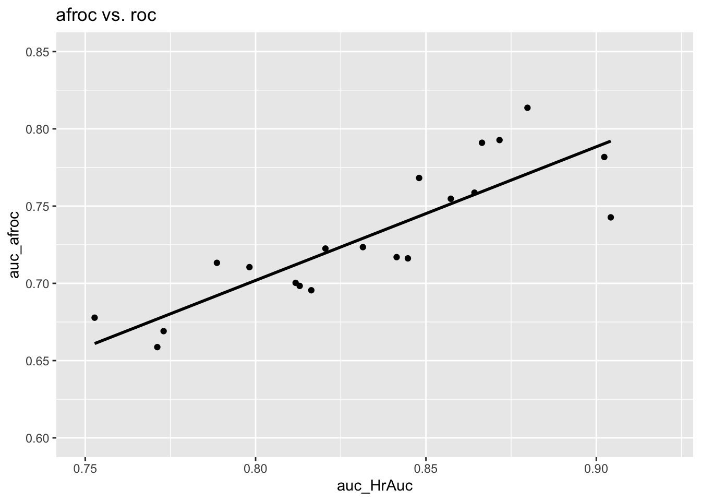
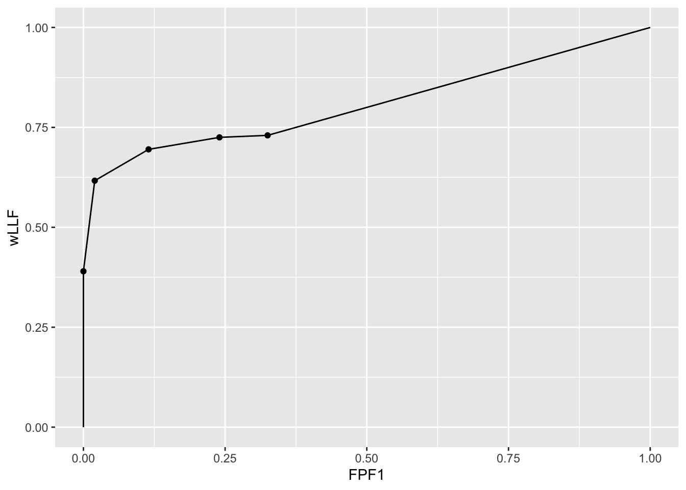

Chapter 3 Empirical plots from FROC data
3.2 Introduction
FROC data consists of mark-rating pairs. A distinction is made between latent marks (suspicious regions perceived by the visual system but not necessarily marked) and actual marks. A key table (used in later chapters) summarizing FROC notation is introduced which allows unambiguous description of the data.
Empirical plots refer to those generated directly from the data. Empirical operating characteristics (empirical plots) introduced in this chapter are the FROC, the (inferred) ROC, the alternative FROC (AFROC), the weighted AFROC (wAFROC), the AFROC1, wAFROC1. Formulae for x and y coordinates of each plot are given in terms of the underlying mark-rating FROC data.
Plots are visual depictions of performance. Scalar measures derived from plots can serve as quantitative measures of performance. Empirical area under curve (AUC) measures associated with all plots are illustrated with a small FROC dataset. Except for the FROC plot all of the other plots include a straight line extension from the uppermost observed operating point to (1,1).
If one ignores localization information and simply considers the highest rating on each case as representing its ROC rating, one can define the empirical ROC plot and associated area measure ROC-AUC from FROC data. Since ROC-AUC is a fundamental measure of classification accuracy between non-diseased and diseased cases any other proposed area measure that does not ignore location information should, if it is to be useful, correlate with ROC-AUC. These correlations are explored using the small dataset and it is shown that FROC-AUC is a poor measure of performance. While ways of circumventing FROC-AUC have been proposed and have been used by some investigators none are satisfactory and the claim of this book is that the FROC should never be used to quantify performance. The basic reason is simple: unlike all of the other plots defined in this chapter the FROC plot is not constrained to lie within the unit square and the area under a straight line extension to (1,1) is meaningless.
Some of the other empirical plots and AUCs are less familiar as compared to the well-known ROC plots and ROC-AUC. As an aid to understanding them I have included numerical (“hand”) calculations of the empirical plots and AUCs for the small dataset. The calculations also illustrate the advantage of using weighted versions implemented in some of the empirical plots (lesion weights are a way of allowing one to model the clinical importance (i.e., morbidity/mortality) associated with different type of lesions present in a clinical dataset; a weighted plot assures that each case gets the same importance in determining AUC regardless of the number of lesions in it).
Computing the AUCs from plots can be tedious at best; computational formulae are needed which would allow any of the AUCs to be calculated directly from the FROC ratings. Appendix 1 proves a formula for the wAFROC-AUC, Appendix 2 provides a physical interpretation of the area under the straight line extension for this plot. Appendix 3 summarizes, without proofs, the computational formulae for AUCs for all plots introduced in this chapter.
3.3 FROC data and notation
3.3.1 LLs vs. NLs
Each mark indicates the location of a region suspicious enough to warrant reporting and the rating is the associated confidence level. A mark is recorded as a lesion localization (LL) if it is sufficiently close to a true lesion and otherwise it is recorded as a non-lesion localization (NL).
In an FROC study the number of marks on a case is an a-priori unknown non-negative random integer. It is incorrect and naive to estimate it by dividing the anatomically-relevant image area by the lesion area because not all regions of the image are equally likely to have lesions, lesions do not have the same size, and perhaps most important, radiologists don’t assign equal attention units to all areas of the image.14
3.3.2 Latent vs. actual marks
To distinguish between suspicious regions that were considered for marking but not necessarily marked and regions that were actually marked, it is necessary to introduce the distinction between latent marks and actual marks.
- A latent mark is defined as a suspicious region, regardless of whether or not it was marked. A latent mark becomes an actual mark if it is marked.
- A latent mark is a latent LL if it is close to a true lesion and otherwise it is a latent NL.
- A non-diseased case can only have latent NLs. A diseased case can have latent NLs and latent LLs.
- If marked a latent NL is recorded as an actual NL.
- If not marked a latent NL is an unobservable event. This is an important point.
- In contrast unmarked lesions are observable events – one knows (trivially) which lesions were not marked.
3.3.3 z-samples vs. ratings
z-samples are conceptual quantities that can range from \(-\infty\) to \(+\infty\). Ratings are observed values typically collected as integers but any ordered set of values will do where larger values correspond to greater suspicion for disease. The conversion from z-samples to ratings is accomplished by adopting a binning rule.
3.3.4 Binning rule
Recall that ROC data modeling requires the existence of a case-dependent decision variable, or z-sample \(z\), and case-independent decision thresholds \(\zeta_r\), where \(r = 0, 1, ..., R_{ROC}-1\), where \(R_{ROC}\) is the number of ROC study bins15 and a binning rule that if \(\zeta_r \leq z < \zeta_{r+1}\) the case is rated \(r + 1\). Dummy cutoffs are defined as \(\zeta_0 = -\infty\) and \(\zeta_{R_{ROC}} = \infty\). The z-sample applies to the whole case. To summarize:
\[\begin{equation} \left. \begin{aligned} \text{if} \left (\zeta_r \le z < \zeta_{r+1} \right )\Rightarrow \text {rating} = r+1\\ r = 0, 1, ..., R_{ROC}-1\\ \zeta_0 = -\infty\\ \zeta_{R_{ROC}} = \infty\\ \end{aligned} \right \} \tag{3.1} \end{equation}\]
Analogously, FROC data modeling requires the existence of a case and location dependent z-sample for each latent mark and case and location independent reporting thresholds \(\zeta_r\), where \(r = 1, ..., R_{FROC}\) and \(R_{FROC}\) is the number of FROC study bins, and the binning rule that a latent mark is marked and rated \(r\) if \(\zeta_r \leq z < \zeta_{r+1}\). Dummy cutoffs are defined as \(\zeta_0 = -\infty\) and \(\zeta_{R_{FROC}+1} = \infty\). For the same numbers of non-dummy cutoffs, the number of FROC bins is one less than the number of ROC bins. For example, 4 non-dummy cutoffs \(\zeta_1, \zeta_2, \zeta_3, \zeta_4\) can correspond to a 5-rating ROC study or to a 4-rating FROC study. To summarize:
\[\begin{equation} \left. \begin{aligned} \text{if} \left (\zeta_r \le z < \zeta_{r+1} \right )\Rightarrow \text {rating} = r\\ r = 1, 2, ..., R_{FROC}\\ \zeta_0 = -\infty\\ \zeta_{R_{FROC}+1} = \infty\\ \end{aligned} \right \} \tag{3.2} \end{equation}\]
3.3.5 Notation
Clear notation is vital to understanding this paradigm. The notation needs to account for case and location dependencies of ratings and the distinction between case-level and location-level ground truths. The notation also has to account for cases with no marks.
FROC notation is summarized in Table 3.1 in which marks refer to latent marks. The first column is the row number, the second column has the symbol(s), and the third column has the meaning(s) of the symbol(s).
| Row | Symbol | Meaning |
|---|---|---|
| 1 | \(t\) | Case-level truth: 1 non-diseased, 2 diseased case |
| 2 | \(K_t\) | Number of cases with case-level truth \(t\) |
| 3 | \(k_t t\) | Case \(k_t\) in case-level truth \(t\) |
| 4 | \(s\) | Location-level truth: 1 for NL and 2 for LL |
| 5 | \(l_s s\) | Mark \(l_s\) in location-level truth \(s\) |
| 6 | \(N_{k_t t}\) | Number of NLs in case \(k_t t\) |
| 7 | \(L_{k_2 2}\) | Number of lesions in case \(k_2 2\) |
| 8 | \(z_{k_t t l_1 1}\) | \(z\)-sample for case \(k_t t\) and NL mark \(l_1 1\) |
| 9 | \(z_{k_2 2 l_2 2}\) | \(z\)-sample for case \(k_2 2\) and LL mark \(l_2 2\) |
| 10 | \(r_{k_t t l_s s}\) | rating for case \(k_t t\) and LL/NL mark \(l_s s\) |
| 11 | \(R_{FROC}\) | Number of FROC bins |
| 12 | \(\zeta_1\) | Lowest non-dummy reporting threshold |
| 13 | \(\zeta_r\) | \(r\) = 2, 3, …, non-dummy reporting thresholds |
| 14 | \(\zeta_0, \zeta_{R_{FROC}+1}\) | Dummy thresholds, negative and positive infinity |
| 15 | \(W_{k_2 l_2}\) | Weight of lesion \(l_2 2\) in case \(k_2 2\), explained later |
| 16 | \(L_{max}\) | Maximum number of lesions per case in dataset |
| 17 | \(L_T\) | Total number of lesions in dataset |
3.3.7 A conceptual and notatonal issue
An aspect of FROC data, that there could be cases with no NL marks, no matter how low the reporting threshold, has created problems both from conceptual and notational viewpoints.
Taking the conceptual issue first, my thinking (prior to 2004) was that as the reporting threshold \(\zeta_1\) is lowered, the number of NL marks per case increases almost indefinitely. I visualized this process as each case “filling up” with NL marks.16 In fact the first model of FROC data (Chakraborty 1989) predicts that as the reporting threshold is lowered to \(\zeta_1 = -\infty\), the number of NL marks per case approaches \(\infty\). However, actual FROC datasets do not agree with this thinking. This is one reason I introduced the radiological search model (RSM) (Dev P Chakraborty 2006). I will have more to say about this in Chapter 5, but for now I state one assumption of the RSM: the number of latent NL marks is a Poisson distributed random integer with a finite value for the mean parameter of the distribution. This means that the actual number of latent NL marks per case can be 0, 1, 2, .., whose average (over all cases) is a finite number. It is highly unlikely that any case will have an infinite number of NLs.
With this background, let us return to the conceptual issue: why does the observer not keep “filling-up” the image with NL marks? The answer is that the observer can only mark regions that have a non-zero chance of being a lesion. For example, if the actual number of latent NLs on a particular case is 2, then, as the reporting threshold is lowered, the observer will make at most two NL marks. Having exhausted these two regions the observer will not mark any more regions because there are no more regions to be marked - all other regions in the image have, in the perception of the observer, zero chance of being a lesion.
The notational issue is how to handle cases with no latent NL marks. Basically it involves restricting summations over cases to those cases which have at least one latent NL mark, i.e., \(N_{k_t t} > 0\), as in the following:
\(l_1 = \{1, 2, ..., N_{k_t t}\}\) indexes latent NL marks, provided the case has at least one latent NL mark; otherwise \(N_{k_t t} = 0\) and \(l_1 = \varnothing\), the null set. The possible values of \(l_1\) are \(l_1 = \left \{ \varnothing \right \}\oplus \left \{ 1,2,...N_{k_t t} \right \}\). The null set applies when the case has no latent NL marks and \(\oplus\) is the “exclusive-or” symbol (“exclusive-or” is used in the English sense: “one or the other, but not neither nor both”).
\(l_2 = \left \{ 1,2,...,L_{k_2 2} \right \}\) indexes latent LL marks. Unmarked LLs are assigned negative infinity ratings as these are observable events. The null set notation is not needed because for every diseased case \(L_{k_2 2} > 0\).
3.4 The FROC plot
Definitions:
- \(NLF_r \equiv NLF(\zeta_r)\) = cumulated NL counts with z-sample \(\geq\) threshold \(\zeta_r\) divided by total number of cases.
- \(LLF_r \equiv LLF(\zeta_r)\) = cumulated LL counts with z-sample \(\geq\) threshold \(\zeta_r\) divided by total number of lesions.
Definitions:
The empirical FROC plot connects adjacent operating points \(\left (\text{NLF}_r, \text{LLF}_r \right )\), including the origin (0,0) and the observed end-point, with straight lines. The area under this plot is the empirical FROC AUC, denoted \(A_{\text{FROC}}\). Warning: this is a particularly dangerous figure of merit, as will shortly become clear.
Using the notation of Table 3.1 and assuming binned data17 and \(n(x)\) denotes the number of events \(x\):
\[\begin{equation} \text{NLF}_r = \frac{n\left ( \text{NLs rated} \geq \zeta_r\right )}{K_1 + K_2} \tag{3.3} \end{equation}\]
and
\[\begin{equation} \text{LLF}_r = \frac{n\left ( \text{LLs rated} \geq \zeta_r\right )}{L_T} \tag{3.4} \end{equation}\]
The allowed values of \(r\) are:
\[\begin{equation} r = 1, 2, ...,R_{FROC} \tag{3.5} \end{equation}\]
Due to the ordering of the thresholds, i.e., \(\zeta_1 < \zeta_2 ... < \zeta_{R_{FROC}}\), higher values of \(r\) correspond to lower operating points. The uppermost operating point, i.e., that defined by \(r = 1\), is referred to the as the observed end-point.
Equations (3.3) and (3.4) are equivalent to:
\[\begin{equation} \text{NLF}_r = \frac{1}{K_1+K_2} \sum_{t=1}^{2} \sum_{k_t=1}^{K_t} \mathbb{I} \left ( N_{k_t t} > 0 \right )\sum_{l_1=1}^{N_{k_t t}} \mathbb{I} \left ( z_{k_t t l_1 1} \geq \zeta_r \right ) \tag{3.6} \end{equation}\]
and
\[\begin{equation} \text{LLF}_r = \frac{1}{L_T} \sum_{k_2=1}^{K_2} \sum_{l_2=1}^{L_{k_2 2}} \mathbb{I} \left ( z_{k_2 2 l_2 2} \geq \zeta_r \right ) \tag{3.7} \end{equation}\]
The indicator function is defined as unity if the argument is true and zero otherwise:
\[\begin{equation} \left. \begin{matrix} \mathbb{I}\left( \text{True} \right) & = & 1\\ \mathbb{I}\left( \text{False} \right) & = & 0 \end{matrix} \right \} \tag{3.8} \end{equation}\]
In Eqn. (3.6) \(\mathbb{I} \left ( N_{k_t t} > 0 \right )\) ensures that only cases with at least one latent NL are included in the summation (recall that \(N_{k_t t}\) is the total number of latent NLs in case \(k_t t\)). The term \(\mathbb{I} \left ( z_{k_t t l_1 1} \geq \zeta_r \right )\) counts over all NL marks with ratings \(\geq \zeta_r\). The right hand side yields the total number of NLs in the dataset with z-samples \(\geq \zeta_r\) and dividing by the total number of cases yields \(\text{NLF}_r\). This equation also shows explicitly that NLs on both non-diseased (\(t=1\)) and diseased (\(t=2\)) cases contribute to NLF.
In Eqn. (3.7) a summation over \(t\) is not needed as only diseased cases contribute to LLF. A term like \(\mathbb{I} \left ( L_{k_2 2} > 0 \right )\) would be superfluous since \(L_{k_2 2} > 0\) as each diseased case must have at least one lesion. The term \(\mathbb{I} \left ( z_{k_2 2 l_2 2} \geq \zeta_r \right )\) counts over all LL marks with ratings \(\geq \zeta_r\). Dividing by \(L_T\), the total number of lesions in the dataset, yields \(\text{LLF}_r\).
Since \(\zeta_{R_{FROC}+1} = \infty\) according to Eqn. (3.6) and Eqn. (3.7) \(r = R_{FROC}+1\) yields the trivial operating point (0,0).
3.4.1 The observed FROC end-point and its semi-constrained property
The abscissa of the observed end-point \(NLF_1\), is defined by:
\[\begin{equation} \text{NLF}_1 = \frac{1}{K_1+K_2} \sum_{t=1}^{2} \sum_{k_t=1}^{K_t} \mathbb{I} \left ( N_{k_t t} > 0 \right ) \sum_{l_1=1}^{N_{k_t t}} \mathbb{I} \left ( z_{k_t t l_1 1} \geq \zeta_1 \right ) \tag{3.9} \end{equation}\]
Since each case could have an arbitrary non-negative number of NLs, \(NLF_1\) need not equal unity, except fortuitously.
The ordinate of the observed end-point \(LLF_1\), is defined by:
\[\begin{equation} \left. \begin{aligned} \text{LLF}_1 =& \frac{1}{L_T} \sum_{k_2=1}^{K_2} \sum_{l_2=1}^{L_{k_2 2}} \mathbb{I} \left ( z_{k_2 2 l_2 2} \geq \zeta_1 \right ) \\ \leq& 1 \end{aligned} \right \} \tag{3.10} \end{equation}\]
The numerator is the total number of lesions that were actually marked. The ratio is the fraction of lesions that are marked, which is \(\leq 1\).
This is the semi-constrained property of the observed end-point, namely, while the ordinate is constrained to the range (0,1) the abscissa is not.
3.4.2 Futility of extrapolation outside the observed end-point
To understand this consider the expression for \(NLF_0\), i.e., using Eqn. (3.6) with \(r = 0\):
\[\begin{equation} \text{NLF}_0 = \frac{1}{K_1+K_2} \sum_{t=1}^{2} \sum_{k_t=1}^{K_t} \mathbb{I} \left ( N_{k_t t} > 0 \right ) \sum_{l_1=1}^{N_{k_t t}} \mathbb{I} \left ( z_{k_t t l_1 1} \geq -\infty \right ) \end{equation}\]
The right hand side of this equation can be separated into two terms, the contribution of latent NLs with z-samples in the range \(z \geq \zeta_1\) and those in the range \(-\infty \leq z < \zeta_1\). The first term yields the abscissa of the observed end-point, Eqn. (3.9) but the 2nd term cannot be evaluated:
\[\begin{equation} \left. \begin{aligned} \text{1st term}=&\left (\frac{1}{K_1+K_2} \right )\sum_{t=1}^{2} \sum_{k_t=1}^{K_t} \mathbb{I} \left ( N_{k_t t} > 0 \right ) \sum_{l_1=1}^{N_{k_t t}} \mathbb{I} \left ( z_{k_t t l_1 1} \ge \zeta_1 \right )\\ =&\text{NLF}_1\\ \text{2nd term}=&\left (\frac{1}{K_1+K_2} \right )\sum_{t=1}^{2} \sum_{k_t=1}^{K_t} \mathbb{I} \left ( N_{k_t t} > 0 \right ) \sum_{l_1=1}^{N_{k_t t}} \mathbb{I} \left ( -\infty \leq z_{k_t t l_1 1} < \zeta_1 \right )\\ =&\frac{\text{unknown number}}{K_1+K_2} \end{aligned} \right \} \tag{3.11} \end{equation}\]
The 2nd term represents the contribution of unmarked NLs, i.e., latent NLs whose z-samples were below \(\zeta_1\). It determines how much further to the right the observer’s NLF would have moved relative to \(NLF_1\) if one could get the observer to lower the reporting criterion to \(-\infty\). Since the observer may not oblige, this term cannot, in general, be evaluated. Therefore \(NLF_0\) cannot be evaluated. The basic problem is that unmarked latent NLs represent unobservable events.
Turning our attention to \(LLF_0\):
\[\begin{equation} \left. \begin{aligned} \text{LLF}_0 =& \frac{ \sum_{k_2=1}^{K_2} \sum_{l_2=1}^{L_{k_2 2}} \mathbb{I} \left ( z_{k_2 2 l_2 2} \geq -\infty \right ) }{L_T}\\ =& 1 \end{aligned} \right \} \tag{3.12} \end{equation}\]
Unlike unmarked latent NLs, unmarked lesions can safely be assigned the \(-\infty\) rating, because an unmarked lesion is an observable event. The right hand side of Eqn. (3.12) evaluates to unity. However, since the corresponding abscissa \(NLF_0\) is undefined, one cannot plot this point. It follows that one cannot extrapolate outside the observed end-point.
The above formalism should not obscure the fact that the futility of extrapolation outside the observed end-point of the FROC is obvious for scientific reasons: extrapolating outside the range of the observed data is generally not a good idea.
3.4.3 Illustration with a dataset
The following plot uses dataset04 (Zanca et al. 2009) to illustrate an empirical FROC plot. This dataset has \(L_{max} = 3\), \(\max{(N_{k_tt}})= 3\) and a 5-point rating scale was employed. The following plot applies to reader 1 in modality (treatment) 1 only. The full dataset has 5 modalities and 4 readers.
ret <- PlotEmpiricalOperatingCharacteristics(
dataset04,
trts = 1, rdrs = 1, opChType = "FROC")
print(ret$Plot)
Shown next are FROC-AUCs for this dataset calculated using the formula in Eqn. (3.43). All 20 modality-reader combinations are shown.
auc_froc <- as.data.frame(UtilFigureOfMerit(dataset04, FOM = "FROC"))
print(auc_froc)
#> rdr1 rdr3 rdr4 rdr5
#> trt1 0.2361972 0.1085035 0.2268486 0.09922535
#> trt2 0.2192077 0.2231338 0.4793310 0.18450704
#> trt3 0.1947359 0.1063028 0.2543662 0.15137324
#> trt4 0.2198768 0.1307394 0.3293662 0.13882042
#> trt5 0.1800528 0.1097535 0.3015141 0.16563380The value 0.2361972 for trt1 and rdr1 is the area under the FROC plot shown above.
3.5 The inferred-ROC plot
By adopting a rule for converting the mark-rating data per case to a single rating per case, and commonly the highest rating rule is used,18 it is possible to infer ROC data from FROC mark-rating data.
3.5.1 The inferred-ROC z-sample
The highest ROC z-sample of a case, denoted \(h_{k_t t}\), is the z-sample of the highest rated latent mark on the case or \(-\infty\) if the case has no latent marks. For non-diseased cases \(t = 1\) the maximum is over all latent NLs on the case. For diseased cases \(t = 2\) the maximum is over all latent NLs and latent LLs on the case.
When there is little possibility for confusion, the prefix “inferred” is suppressed. ROC z-samples on non-diseased cases are referred to as FP z-samples and those on diseased cases as TP z-samples.
Using the by now familiar cumulation procedure, FP counts are cumulated to calculate FPF and likewise TP counts are cumulated to calculate TPF.
Definitions:
- \(FPF(\zeta)\) = cumulated inferred FP counts with \(h_{k_1 1} \geq \zeta\) divided by total number of non-diseased cases.
- \(TPF(\zeta)\) = cumulated inferred TP counts with \(h_{k_2 2} \geq \zeta\) divided by total number of diseased cases.
Definition of ROC plot:
- The ROC is the plot of inferred \(TPF(\zeta)\) vs. inferred \(FPF(\zeta)\).
- The plot includes a straight line extension from the observed end-point to (1,1).
The highest z-sample ROC false positive (FP) z-sample for non-diseased case \(k_1 1\) is defined by:
\[\begin{equation} \left. \begin{aligned} \begin{matrix} FP_{k_1 1}=&\max_{l_1} \left ( z_{k_1 1 l_1 1 } \right ) & \text{if} & l_1 \neq \varnothing\\ FP_{k_1 1}=&-\infty & \text{if} & l_1 = \varnothing \end{matrix} \end{aligned} \right \} \tag{3.13} \end{equation}\]
If the case has at least one latent NL mark, then \(l_1 \neq \varnothing\), where \(\varnothing\) is the null set, and the first definition applies. If the case has no latent NL marks, then \(l_1 = \varnothing\), and the second definition applies. \(FP_{k_1 1}\) is the maximum z-sample over all latent marks occurring on non-diseased case \(k_1 1\), or \(-\infty\) if the case has no latent marks (this is allowed because a non-diseased case with no marks is an observable event). The corresponding false positive fraction is defined by:
\[\begin{equation} \text{FPF}_r \equiv \text{FPF} \left ( \zeta_r \right ) = \frac{1}{K_1} \sum_{k_1=1}^{K_1} \mathbb{I} \left ( FP_{k_1 1} \geq \zeta_r\right ) \tag{3.14} \end{equation}\]
3.5.2 Inferred TPF
The inferred true positive (TP) z-sample for diseased case \(k_2 2\) is defined by one of the following three equations, as explained below:
\[\begin{equation} \begin{matrix} TP_{k_2 2} = \max_{l_1 l_2}\left ( z_{k_2 2 l_1 1} ,z_{k_2 2 l_2 2} \right ) & \text{if} & l_1 \neq \varnothing \end{matrix} \tag{3.15} \end{equation}\]
or
\[\begin{equation} \begin{matrix} TP_{k_2 2} = \max_{l_2} \left ( z_{k_2 2 l_2 2} \right ) & \text{if} & \left( l_1 = \varnothing \right) \land \left (\max_{l_2}{\left (z_{k_2 2 l_2 2} \right )} > -\infty \right ) \end{matrix} \tag{3.16} \end{equation}\]
or
\[\begin{equation} \begin{matrix} TP_{k_2 2} = -\infty & \text{if} & \left ( l_1 = \varnothing \land\left ( \max_{l_2}{\left (z_{k_2 2 l_2 2} \right )} = -\infty \right ) \right ) \end{matrix} \tag{3.17} \end{equation}\]
Here \(\land\) is the logical AND operator. An explanation is in order. Consider Eqn. (3.15). There are two z-samples inside the \(\max\) operator: \(z_{k_2 2 l_1 1} ,z_{k_2 2 l_2 2}\). The first z-sample is from a NL on a diseased case, as per the \(l_1 1\) subscripts, while the second is from a LL on the same diseased case, as per the \(l_2 2\) subscripts.
If \(l_1 \neq \varnothing\) then Eqn. (3.15) applies, i.e., one takes the maximum over all z-samples, NLs and LLs, whichever is higher, on the diseased case.
If \(l_1 = \varnothing\) and at least one lesion is marked, then Eqn. (3.16) applies, i.e., one takes the maximum z-sample over all marked LLs.
If \(l_1 = \varnothing\) and no lesions are marked, then Eqn. (3.17) applies; this represents an unmarked diseased case; the \(-\infty\) z-sample assignment is justified because an unmarked diseased case is an observable event.
The inferred true positive fraction \(\text{TPF}_r\) is defined by:
\[\begin{equation} \text{TPF}_r \equiv \text{TPF}(\zeta_r) = \frac{1}{K_2}\sum_{k_2=1}^{K_2} \mathbb{I}\left ( TP_{k_2 2} \geq \zeta_r \right ) \tag{3.18} \end{equation}\]
3.5.3 The empirical ROC plot and AUC
Definitions:
The inferred empirical ROC plot connects adjacent points \(\left( \text{FPF}_r, \text{TPF}_r \right )\), including the origin (0,0), with straight lines plus a straight-line segment connecting the observed end-point to (1,1). Like a real ROC, this plot is constrained to lie within the unit square. The area under this plot is the empirical inferred ROC AUC, denoted \(A_{\text{ROC}}\).
3.5.4 The observed end-point of the ROC and its constrained property
The abscissa of the observed end-point \(FPF_1\), is defined by:
\[\begin{equation} \text{FPF}_1 \equiv \text{FPF} \left ( \zeta_1 \right ) = \frac{1}{K_1} \sum_{k_1=1}^{K_1} \mathbb{I} \left ( FP_{k_1 1} \geq \zeta_1 \right ) \tag{3.19} \end{equation}\]
Since each case gets a single FP z-sample, and only unmarked cases get the \(-\infty\) z-sample, \(\text{FPF}_1 \leq 1\).
The ordinate of the observed end-point \(TPF_1\), is defined by:
\[\begin{equation} \text{TPF}_1 \equiv \text{TPF}(\zeta_1) = \frac{1}{K_2}\sum_{k_2=1}^{K_2} \mathbb{I}\left ( TP_{k_2 2} \geq \zeta_1 \right ) \tag{3.20} \end{equation}\]
Since each case gets a single TP z-sample, and only unmarked cases get the \(-\infty\) z-sample, \(\text{TPF}_1 \leq 1\).
It follows that the observed end-point of the ROC (as is well known) satisfies the constrained end-point property: it lies below-left the (1,1) corner of the plot.
The upper-right corner (reached by counting all z-samples \(\ge -\infty\)) of the ROC plot is not to be confused by the observed end-point (reached by counting all z-samples \(\ge \zeta_1\)).
3.5.5 Illustration with a dataset
The following code uses dataset04 to illustrate an empirical ROC plot for treatment 1 and reader 1. The reader should experiment by running PlotEmpiricalOperatingCharacteristics(dataset04, trts = 1, rdrs = 1, opChType = ROC")$Plot with different treatments trts and readers rdrs specified.
ret <- PlotEmpiricalOperatingCharacteristics(
dataset04,
trts = 1, rdrs = 1, opChType = "ROC")
print(ret$Plot)
Shown next is calculation of the figure of merit for this dataset. Note that in function UtilFigureOfMerit() the FOM argument has to be set to HrAuc, for highest rating AUC.].
3.6 The alternative FROC (AFROC) plot
- Fig. 4 in (Bunch et al. 1977) anticipated another way of visualizing FROC data. I subsequently termed this the alternative FROC (AFROC) plot (Chakraborty 1989).
- The empirical AFROC is defined as the plot of \(\text{LLF}(\zeta_r)\) along the ordinate vs. \(\text{FPF}(\zeta_r)\) along the abscissa.
- \(\text{LLF}_r \equiv \text{LLF}(\zeta_r)\), the ordinate of the FROC plot, was defined in Eqn. (3.7).
- \(\text{FPF}_r \equiv \text{FPF}(\zeta_r)\), the abscissa of the ROC plot, was defined in Eqn. (3.14).
3.6.1 Definition: empirical AFROC plot and AUC
The empirical AFROC plot connects adjacent operating points \(\left( \text{FPF}_r, \text{LLF}_r \right )\), including the origin (0,0) and (1,1), with straight lines. The area under this plot is the empirical AFROC AUC, denoted \(A_{\text{AFROC}}\).
Key points:
- The ordinates (LLF) of the FROC and AFROC are identical.
- The abscissa (FPF) of the ROC and AFROC are identical.
- The AFROC is a hybrid plot incorporating aspects of both ROC and FROC plots.
- The AFROC is constrained to within the unit square.
Prof. Richard Swensson did not like my choice of the word “alternative” in naming this operating characteristic. I had no idea in 1989 how important this plot would later turn out to be, otherwise a more meaningful name might have been proposed. To anticipate the central message of this book, the AUC based on this plot (and weighted versions of it introduced below), are superior to the FROC-AUC and the ROC-AUC in terms of statistical power and reliability (the FROC-AUC is especially unreliable).
3.6.2 The observed end-point of the AFROC and its constrained property
According to Eqn. (3.14) the abscissa of the observed end-point \(FPF_1 \leq 1\) and according to Eqn. (3.10) the ordinate of the observed end-point \(\text{LLF}_1 \leq 1\). It follows that the observed end-point of the AFROC satisfies the constrained end-point property, i.e., it lies below-left the (1,1) corner of the plot.
3.6.3 Illustration with a dataset
The following code uses dataset04 to illustrate an empirical AFROC plot for treatment 1 and reader 1.
ret <- PlotEmpiricalOperatingCharacteristics(
dataset04,
trts = 1, rdrs = 1, opChType = "AFROC")
print(ret$Plot)
Shown next are the figures of merit for this dataset for all treatment reader combinations.
UtilFigureOfMerit(dataset04, FOM = "AFROC")
#> rdr1 rdr3 rdr4 rdr5
#> trt1 0.7427113 0.7104930 0.7003169 0.7909859
#> trt2 0.7586972 0.7161620 0.7225352 0.7927465
#> trt3 0.6983451 0.6955282 0.6777817 0.7547535
#> trt4 0.7817606 0.7234507 0.7132746 0.8136268
#> trt5 0.7169718 0.6690845 0.6587324 0.76820423.7 The weighted-AFROC plot (wAFROC) plot
The AFROC ordinate defined in Eqn. (3.7) gives equal importance to every lesion in a case. A case with more lesions will have more influence on the AFROC (see next section for an explicit demonstration of this fact). This is undesirable since each case (i.e., patient) should get equal importance in the analysis – as with ROC analysis, one wishes to draw conclusions about the population of cases and each case is an equally valid sample from the population. In particular, one does not want the analysis to be skewed towards cases with greater numbers of lesions.19
Another issue is that the AFROC assigns equal clinical importance to each lesion in a case. Lesion weights were introduced (Chakraborty and Berbaum 2004) to allow for the possibility that the clinical importance of finding a lesion might be lesion-dependent (Chakraborty and Yoon 2009). For example, it is possible that a diseased cases has lesions of two types with differing clinical importance; the figure-of-merit should give more credit to finding the more clinically important one. Clinical importance could be defined as the mortality associated with the specific lesion type; these can be obtained from epidemiological studies (DeSantis et al. 2011).
Let \(W_{k_2 l_2} \geq 0\) denote the weight (i.e., short for clinical importance) of lesion \(l_2\) in diseased case \(k_2\) (since weights are only applicable to diseased cases one can, without ambiguity, drop the case-level and location-level truth subscripts, i.e., the notation \(W_{k_2 2 l_2 2}\) would be superfluous). For each diseased case \(k_2 2\) the weights are subject to the constraint:
\[\begin{equation} \sum_{l_2 =1 }^{L_{k_2 2}} W_{k_2 l_2} = 1 \tag{3.21} \end{equation}\]
The weighted lesion localization fraction \(\text{wLLF}_r\) is defined by (Chakraborty and Zhai 2016):
\[\begin{equation} \text{wLLF}_r \equiv \text{wLLF}\left ( \zeta_r \right ) = \frac{1}{K_2}\sum_{k_2=1}^{K_2}\sum_{l_2=1}^{L_{k_2 2}}W_{k_2 l_2} \mathbb{I}\left ( z_{k_2 2 l_2 2} \geq \zeta_r \right ) \tag{3.22} \end{equation}\]
3.7.1 The empirical wAFROC plot and AUC
The empirical wAFROC plot connects adjacent operating points \(\left ( \text{FPF}_r, \text{wLLF}_r \right )\), including the origin (0,0), with straight lines plus a straight-line segment connecting the observed end-point to (1,1). The area under this plot is the empirical weighted-AFROC AUC, denoted \(A_{\text{wAFROC}}\).
3.7.2 Illustration with a dataset
The following code uses dataset04 to illustrate an empirical ROC plot for treatment 1 and reader 1.
ret <- PlotEmpiricalOperatingCharacteristics(
dataset04, trts = 1, rdrs = 1, opChType = "wAFROC")
print(ret$Plot)
Shown next is calculation of the figure of merit for this dataset.
UtilFigureOfMerit(dataset04, FOM = "wAFROC")
#> rdr1 rdr3 rdr4 rdr5
#> trt1 0.7792667 0.7248917 0.7036250 0.8050917
#> trt2 0.7870000 0.7269000 0.7226167 0.8037833
#> trt3 0.7296917 0.7157583 0.6723083 0.7726583
#> trt4 0.8101333 0.7431167 0.6943583 0.8294083
#> trt5 0.7488000 0.6822750 0.6551750 0.77125003.8 AFROC vs. wAFROC
The fact that the wAFROC gives equal importance to each diseased case while the AFROC gives more importance to diseased cases with more lesions can be illustrated with a fictitious small dataset consisting of \(K_1 = 4\) non-diseased and \(K_2 = 5\) diseased cases. The maximum number of NLs per case is two and the maximum number of lesions per case is three. The first two diseased cases have one lesion each, the third and fourth have two lesions each and the fifth has 3 lesions. Here is how we code the NL and LL z-samples (t() is the R transpose operator). The negative infinities represent unmarked locations. For example, the first non-diseased case has no NL marks, the second has one mark rated 0.5, etc., and the first diseased case has one NL mark rated 1.5, etc. The first lesion in the LL array was rated 0.9. the second was rated -0.2, …, and the 3 lesions in the fifth diseased case were rated 1, 2.5 and 1, respectively.
NL <- t(array(c(-Inf, -Inf,
0.5, -Inf,
0.7, 0.6,
-0.3, -Inf,
1.5, -Inf,
-Inf, -Inf,
-Inf, -Inf,
-Inf, -Inf,
- Inf, -Inf), dim = c(2,9)))
LL <- t(array(c(0.9, -Inf, -Inf,
-0.2, -Inf,-Inf,
1.6, -Inf, -Inf,
3, 2, -Inf,
1, 2.5, 1), dim = c(3,5)))The z-samples are converted to a dataset frocData as shown next:
In the above code perCase = c(1,1,2,2,3) specifies the number of lesions per case: 1 in the first diseased case, 1 in the second, 2 in the third, …, and 3 in the fifth. The function Df2RJafrocDataset() generates the dataset object.
The lesion weights are specified in the following lines.
frocData$lesions$weights[3,] <- c(0.1, 0.9, -Inf)
frocData$lesions$weights[4,] <- c(0.9, 0.1, -Inf)
frocData$lesions$weights[5,] <- c(0.3, 0.4, 0.3)The first and second diseased cases, which have only one lesion each, are assigned unit weights by default. The first lesion in the third diseased case has weight 0.1 and the second has weight 0.9 – notice that the weights sum to unity. The fourth diseased cases has the lesion weights reversed, 0.9 and 0.1. The three lesions in the fifth diseased case are assigned weights 0.3. 0.4 and 0.3.
3.8.1 NL and LL z-samples
Shown next is the NL z-samples array; it has 9 rows, corresponding to the total number of cases (the first four correspond to non-diseased cases and the rest to diseased cases) and 2 columns, corresponding to the maximum number of NLs per case.
#> NL z-samples:
#> [,1] [,2]
#> [1,] -Inf -Inf
#> [2,] 0.5 -Inf
#> [3,] 0.7 0.6
#> [4,] -0.3 -Inf
#> [5,] 1.5 -Inf
#> [6,] -Inf -Inf
#> [7,] -Inf -Inf
#> [8,] -Inf -Inf
#> [9,] -Inf -InfShown next is the LL z-samples array; it has 5 rows, corresponding to the total number of diseased cases, and 3 columns, corresponding to the maximum number of LLs per case:
#> LL z-samples:
#> [,1] [,2] [,3]
#> [1,] 0.9 -Inf -Inf
#> [2,] -0.2 -Inf -Inf
#> [3,] 1.6 -Inf -Inf
#> [4,] 3.0 2.0 -Inf
#> [5,] 1.0 2.5 13.8.2 Lesion weights
Show next is the lesion weights array:
#> lesion weights:
#> [,1] [,2] [,3]
#> [1,] 1.0 -Inf -Inf
#> [2,] 1.0 -Inf -Inf
#> [3,] 0.1 0.9 -Inf
#> [4,] 0.9 0.1 -Inf
#> [5,] 0.3 0.4 0.3The negative infinities represent missing values.
3.8.3 FPF
Shown next is the FP z-samples array. Since FPs are only possible on non-diseased cases, this is a length 4 row-vector. Each value is the maximum of the two NL z-samples for the corresponding non-diseased case. As an example, for case #3 the maximum of the two NL values is 0.7.
#> FP z-samples:
#> [1] -Inf 0.5 0.7 -0.3Here are the sorted FP z-samples.
#> [1] -Inf -0.3 0.5 0.7The sorting makes it easy to construct the FPF values, shown next.
#> FPF values:
#> 0.000 0.000 0.000 0.000 0.000 0.000 0.000 0.250 0.500 0.500 0.750 1.000The first non-zero FPF value is \(0.25 = 1/4\), which occurs when a conceptual sliding threshold is lowered past the highest FP value, namely 0.7. (The 0.25 comes from 1 FP case divided by 4 non-diseased cases.) The next FPF value is \(0.5 = 2/4\), which occurs when the sliding threshold is lowered past the next-highest FP value, namely 0.5. The next FPF value is 0.75 and the last FPF value is unity.
3.8.4 LLF
Here are the sorted LL z-samples.
#> [1] -Inf -Inf -Inf -Inf -Inf -Inf -Inf -0.2 0.9 1.0 1.0 1.6 2.0 2.5 3.0The LLF values are shown next.
#> LLF values:
#> 0.000 0.111 0.222 0.333 0.444 0.667 0.778 0.778 0.778 0.889 0.889 1.000The first non-zero LLF value is 0.111, which occurs when the sliding threshold is lowered past the highest LL value, namely 3. The 0.111 comes from 1 LL divided by 9, the total number of lesions. The next LLF value is 0.222, which occurs when the sliding threshold is lowered past the next-highest LL value, namely 2.5 (2/9 = 0.222). The next LLF value is 0.333, which occurs when the sliding threshold is lowered past 2 (3/9 = 0.333), and so on.
3.8.5 wLLF
The sorted LL z-samples array and the weights are used to construct the wLLF values shown next.
#> wLLF values:
#> 0.000 0.180 0.260 0.280 0.300 0.420 0.620 0.620 0.620 0.820 0.820 1.000The first non-zero wLLF value is 0.18, which occurs when the sliding threshold is lowered past the highest LL value, namely 3. Since this comes from lesion #1 on diseased case #4, whose weight is 0.9, the corresponding incremental vertical jump is \(1/5*0.9 = 0.18\), which is also the net wLLF value corresponding to the most suspicious lesion crossing the cutoff. Notice that we are dividing by 5, the total number of diseased cases, not 9 as in the LLF example.
The next wLLF value is 0.26, which occurs when the sliding threshold is lowered past the next-highest LL value, namely 2.5, which comes from the 2nd lesion on the fifth diseased case with weight 0.4. The incremental jump in wLLF is \(1/5*0.4 = 0.08\). The net wLLF value corresponding to the two most suspicious lesions crossing the cutoff is \(1/5*0.9 + 1/5*0.4 = 0.26\).
The next wLLF value is 0.280, which occurs when the sliding threshold is lowered past 1.6, which comes from lesion #1 on diseased case #3, with weight 0.1, and the net wLLF value corresponding to the three most suspicious lesions crossing the cutoff is \(1/5*0.9 + 1/5*0.4 + 1/5*0.1 = 0.280\), and so on.
The reader should complete these hand-calculations to reproduce all of the wLLF values shown above. The values (FPF, LLF and wLLF) defining the AFROC and wAFROC are summarized here:
#> FPF LLF wLLF
#> 1 0.00 0.0000000 0.00
#> 2 0.00 0.1111111 0.18
#> 3 0.00 0.2222222 0.26
#> 4 0.00 0.3333333 0.28
#> 5 0.00 0.4444444 0.30
#> 6 0.00 0.6666667 0.42
#> 7 0.00 0.7777778 0.62
#> 8 0.25 0.7777778 0.62
#> 9 0.50 0.7777778 0.62
#> 10 0.50 0.8888889 0.82
#> 11 0.75 0.8888889 0.82
#> 12 1.00 1.0000000 1.00This shows that the empirical AFROC is defined by the following 6 operating points: (0,0), (0,0.7777778), (0.5,0.7777778), (0.5,0.8888889), (0.75, 0.8888889) and (1,1). Likewise, the empirical wAFROC is defined by the following 6 operating points: (0,0), (0,0.62), (0.5,62), (0.5,0.82), (0.75, 0.82) and (1,1). In each case one simply connects neighboring points with straight lines.
The hand-calculations also show why the AFROC gives more importance to diseased cases with more lesions while the wAFROC does not.
Considering the AFROC, diseased case #5 with three lesions which contributes three vertical jumps to LLF totaling \(3/9 = 0.333333\).20 This is larger than the contribution to LLF of diseased case #1 with one lesion \(1/9 = 0.11111\).
Considering the wAFROC, the three lesions on diseased case #5 contribute \(1/5*0.3 + 1/5*0.4 + 1/5*0.3 = 0.2\) to wLLF, the same as diseased case #1, \(1/5*1 = 0.2\).
Shown in Fig. 3.1 are the empirical AFROC and wAFROC plots.

FIGURE 3.1: Left: AFROC plot; Right: corresponding wAFROC plot.
The operating points can be used to numerically calculate the AUCs under the empirical AFROC and wAFROC plots, as done in the following code:
afroc_auc <- 0.5 * 0.7777778 +
0.25 * 0.8888889 +
0.25 * 0.8888889 + (1 - 0.8888889) * 0.25 /2
wafroc_auc <- 0.5 * 0.62 +
0.25 * 0.82 +
0.25 * 0.82 +
(1 - 0.82) * 0.25 /2
cat("afroc_auc =", afroc_auc,"\n")
#> afroc_auc = 0.8472222
cat("wafroc_auc =", wafroc_auc,"\n")
#> wafroc_auc = 0.7425The same AUC results are obtained using the function UtilFigureOfMerit:
cat("AFROC AUC = ",
as.numeric(UtilFigureOfMerit(frocData, FOM = "AFROC")),"\n")
#> AFROC AUC = 0.8472222
cat("wAFROC AUC = ",
as.numeric(UtilFigureOfMerit(frocData, FOM = "wAFROC")),"\n")
#> wAFROC AUC = 0.7425It is seen that the empirical plots consist of upward and rightward jumps starting from the origin (0,0) and ending at (1,1). Each upward jump is associated with a LL z-sample exceeding a virtual threshold. Each rightward jump is associated with a FP z-sample exceeding the threshold. Upward jumps tend to increase the area under the AFROC-based plots and rightward jumps tend to decrease it, i.e., correct decisions are rewarded and incorrect ones are penalized. If there are only upward jumps then the empirical plot rises from the origin to (0,1), where all lesions are correctly localized without any generating FPs and performance is perfect – the straight-line extension of the plot to (1,1) ensures that the net area is unity. If there are only horizontal jumps the operating point moves from the origin to (1,0), where none of the lesions are localized and every non-diseased case has at least one NL mark and despite the straight line extension to (1,1), the net area is zero. This represents worst possible performance.
3.9 Interpretation of AUCs
- The area under the AFROC is the probability that a lesion is rated higher than any mark on a non-diseased case.
- The area under the weighted-AFROC is lesion-weight adjusted probability that a lesion is rated higher than any mark on a non-diseased case.
3.10 Instructive examples
I am including a few extreme cases that I have found to be instructive. These include chance level performance and observers who do not generate any marks.
3.10.1 The FROC
The chance level FROC is a “flat-liner” hugging the x-axis except for a possible upturn at large NLF. For an observer who does not generate any marks the FROC plot contains but one point, the origin, and \(A_{\text{FROC}}=0\).
3.10.2 The ROC
The chance level ROC is the positive diagonal connecting (0,0) to (1,1). There could be several operating points on this diagonal (apart from sampling effects) but \(A_{\text{ROC}}=0.5\).
An observer who does not generate any marks the ROC plot consists of two points, the origin and (1,1) and \(A_{\text{ROC}}=0.5\).
3.10.3 The AFROC
3.10.3.1 Chance level performance
The chance level AFROC is not the line connecting (0,0) to (1,1). This is a serious misconception that I have encountered. A chance level observer will generate a “flat-liner” but this time the plot ends at (1,0) and the straight line extension will be a vertical line connecting (1,0) to (1,1) and \(A_{\text{AFROC}}=0\).
3.10.3.2 Case of no marks
This is a highly interesting and instructive example. The AFROC plot is a straight line connecting (0,0) and (1,1) which could be mistakenly termed as representing chance level performance. This is far from the truth.
An expert radiologist successfully screens out non-diseased cases and sees nothing suspicious in any of them – not mistaking variants of normal anatomy for false lesions on non-diseased cases is a sign of expertise. Suppose the lesions on diseased cases are very difficult to see, even for the expert, so the radiologist does not mark any of them in addition to not marking any NLs on diseased cases. The expert radiologist therefore does not report anything, i.e., generates no marks, and the operating point is “stuck” at the origin (0,0). Even in this unusual situation, one would be justified in connecting the origin to (1,1) and claiming area under AFROC is 0.5. The extension gives the radiologist credit for not marking any non-diseased case; of course, the radiologist does not get any credit for marking any of the lesions. An even better radiologist, who finds and marks some of the lesions, will score higher, and AFROC-AUC will exceed 0.5.
3.11 FROC-AUC is a poor measure
Regarding the ROC-AUC, i.e., \(A_{\text{ROC}}\), as the gold standard against which all other figures of merit should be compared for consistency in orderings, shown next are plots of \(A_{\text{FROC}}\), \(A_{\text{AFROC}}\) and \(A_{\text{wAFROC}}\) vs. \(A_{\text{ROC}}\) for the dataset used in the previous illustrations.
3.11.1 Plot of FROC AUC vs. ROC AUC
The following is the plot of \(A_{\text{FROC}}\) vs. \(A_{\text{ROC}}\). There are 20 points on the plot corresponding to 5 treatments and 4 readers. The straight line is a least squares fit. Note the poor correlation and negative slope between \(A_{\text{FROC}}\) and \(A_{\text{ROC}}\), \(R^2\) = 0.0347791, slope = -0.3978636.

The reason should be fairly obvious. The FROC is unconstrained in the NLF direction and the area under the plot rewards an observer who generates more NLs, i.e., as the operating point moves further to the right. (The perfect observer whose FROC plot is the vertical line connecting (0,0) and (0,1) is heavily penalized since \(A_{\text{FROC}} = 0\) for this observer.) One can try to try to avoid this problem by limiting the area under the FROC to that between \(\text{NLF} = 0\) and \(\text{NLF} = x\) where \(x\) is an arbitrarily chosen fixed value – indeed the partial area procedure has been used by CAD algorithm designers. Since the choice of \(x\) is arbitrary the procedure is subjective. The method would fail for any observer with \(\text{NLF}_{max} < x\) as then the partial area is undefined. This forces the algorithm designer to chose \(x\) as the minimum of all \(\text{NLF}_{max}\) values over all observers and treatments, which would exclude a lot of data and lead to a statistical power penalty.
3.11.2 Plot of AFROC AUC vs. ROC AUC
The following is the plot of \(A_{\text{AFROC}}\) vs. \(A_{\text{ROC}}\). This time there is a strong positive correlation between the two, \(R^2\) = 0.7258723, slope = 0.8649687. The reason is that the AFROC is fully contained in the unit square. An observer who generates more NL marks will yield smaller \(A_{\text{AFROC}}\) – as the abscissa of the AFROC approaches unity the restriction to the unit square ensures that AUC will decrease.


3.12 The AFROC1 plot
Historically the AFROC originally used a different definition of FPF, resulting in what is retrospectively termed the AFROC1 plot. Since NLs can occur on diseased cases, it is possible to define an inferred-“FP” z-sample on a diseased case as the maximum of all NL z-samples on the case, or \(-\infty\) if the case has no NLs. The quotes emphasize that this is non-standard usage of ROC terminology: in an ROC study, a FP can only occur on a non-diseased case. Since both case-level truth states are allowed, the highest false positive (FP) z-sample for case \(k_t t\) is [the “1” superscript below is necessary to distinguish it from Eqn. (3.13)]:
\[\begin{equation} \left. \begin{aligned} \begin{matrix} FP_{k_1 t}^1=&\max_{l_1} \left ( z_{k_t t l_1 1 } \right ) & \text{if} & l_1 \neq \varnothing\\ FP_{k_t t}^1=&-\infty & \text{if} & l_1 = \varnothing \end{matrix} \end{aligned} \right \} \tag{3.23} \end{equation}\]
\(FP_{k_t t}^1\) is the maximum over all latent NL marks, labeled by the location index \(l_1\), occurring in case \(k_t t\), or \(-\infty\) if \(l_1 = \varnothing\). The corresponding false positive fraction \(FPF_r^1\) is defined by:
\[\begin{equation} \left. \begin{aligned} FPF_r^1 &\equiv FPF_r^1\left ( \zeta_r \right ) \\ &= \frac{1}{K_1+K_2}\sum_{t=1}^{2}\sum_{k_t=1}^{K_t} \mathbb{I}\left ( FP_{k_t t}^1 \geq \zeta_r \right ) \end{aligned} \right \} \tag{3.24} \end{equation}\]
Note the subtle differences between Eqn. (3.14) and Eqn. (3.24). The latter counts “FPs” on non-diseased and diseased cases while Eqn. (3.14) counts FPs on non-diseased cases only, and for that reason the denominators in the two equations are different. The advisability of allowing a diseased case to generate both a TP and a FP may be questionable, however, this plot is useful in applications where all or almost all cases are diseased.
3.12.1 Empirical AFROC1 plot and AUC
The empirical AFROC1 plot connects adjacent operating points \(\left ( FPF_r^1, \text{LLF}_r \right )\), including the origin (0,0) and (1,1), with straight lines. The only difference between AFROC1 plot and the AFROC plot is the x-axis. The area under this plot is the empirical AFROC1 AUC, denoted \(A_{\text{AFROC1}}\).
3.12.2 Illustration with a dataset
The following code uses dataset04 to illustrate an empirical ROC plot for treatment 1 and reader 1.
ret <- PlotEmpiricalOperatingCharacteristics(
dataset04,
trts = 1, rdrs = 1, opChType = "AFROC1")
print(ret$Plot)
Shown next is calculation of the figure of merit for this dataset.
UtilFigureOfMerit(dataset04, FOM = "AFROC1")
#> rdr1 rdr3 rdr4 rdr5
#> trt1 0.7744718 0.7157218 0.7229225 0.7913908
#> trt2 0.7826585 0.7278169 0.7364437 0.7897887
#> trt3 0.7412852 0.6868310 0.6946303 0.7573415
#> trt4 0.8087852 0.7346831 0.7343486 0.8155634
#> trt5 0.7580810 0.6825704 0.6643662 0.77427823.13 The weighted-AFROC1 (wAFROC1) plot
Similar to the logic for introducing the wAFROC plot as a way of giving equal importance to all diseased cases and allowing the clinical importance of lesions to be modeled by appropriate weights, we introduce a weighted version of the AFROC1, termed the wAFROC1. The ordinate of this plot is the weighted lesion localization fraction \(\text{wLLF}_r\) defined in Eqn. (3.22). The abscissa is FPF1, defined in Eqn. (3.24).
3.13.1 Empirical wAFROC1 plot and AUC
The empirical weighted-AFROC1 (wAFROC1) plot connects adjacent operating points \(\left ( FPF_r^1, \text{wLLF}_r \right )\), including the origin (0,0) and (1,1), with straight lines. The only difference between it and the wAFROC plot is in the x-axis. The area under this plot is the empirical weighted-AFROC AUC, denoted \(A_{\text{wAFROC1}}\).
3.13.2 Illustration with a dataset
The following code uses dataset04 to illustrate an empirical wAFROC1 plot for treatment 1 and reader 1.
ret <- PlotEmpiricalOperatingCharacteristics(
dataset04,
trts = 1, rdrs = 1, opChType = "wAFROC1")
print(ret$Plot)
Shown next is calculation of the figure of merit for this dataset.
UtilFigureOfMerit(dataset04, FOM = "wAFROC1")
#> rdr1 rdr3 rdr4 rdr5
#> trt1 0.8068333 0.7298917 0.7262042 0.8058542
#> trt2 0.8084625 0.7379917 0.7363083 0.8010167
#> trt3 0.7680875 0.7075583 0.6890208 0.7743875
#> trt4 0.8348750 0.7533917 0.7160250 0.8308333
#> trt5 0.7857708 0.6953292 0.6605167 0.77740003.14 Summary
Here is a summary of the plots defined from FROC data along with my recommendations:
| OC | Abscissa | Ordinate | Comments |
|---|---|---|---|
| FROC | NLF | LLF | Not recommended |
| ROC | FPF | TPF | |
| AFROC | FPF | LLF | |
| wAFROC | FPF | wLLF | Recommended when \(K_1 \approx K_2\) |
| AFROC1 | FPF1 | LLF | |
| wAFROC1 | FPF1 | wLLF | Recommended when \(K_1 \ll K_2\) |
3.15 Appendix 1: Proof of formula for wAFROC-AUC
The area \(\text{A}_{wAFROC}\) under the empirical wAFROC plot is obtained by summing the areas of individual trapezoids defined by dropping vertical lines from each pair of adjacent operating points to the x-axis. A sample plot is shown Fig. 3.2.
FIGURE 3.2: An example wAFROC plot; from left to right, the two shaded areas correspond to \(A_i\) and \(A_0\), respectively, defined below.
The operating point labeled \(i\) has coordinates \(\left ( \text{FPF}_i, \text{wLLF}_i \right )\) given by Eqn. (3.14) and Eqn. (3.22).
The area \(A_i\) of the leftmost shaded trapezoid in Fig. 3.2 is:
\[\begin{equation} A_i = \frac{\left (\text{FPF}_i - \text{FPF}_{i+1}\right )\left (\text{wLLF}_i + \text{wLLF}_{i+1}\right )}{2} \tag{3.25} \end{equation}\]
The weighted lesion localization fraction \(\text{wLLF}_r\) corresponding to threshold \(\zeta_r\) is defined by Eqn. (3.22). It follows that:
\[\begin{equation} \left. \begin{aligned} A_i =& \frac{\left (\text{FPF}_i - \text{FPF}_{i+1}\right )}{2} \times \\ & \frac{1}{K_2}\left[ \sum_{k_2=1}^{K_2}\sum_{l_2=1}^{L_{k_2 2}}W_{k_2 l_2} \mathbb{I}\left ( z_{k_2 2 l_2 2} \geq \zeta_i \right ) \right. \\ &+ \left. \sum_{k_2=1}^{K_2}\sum_{l_2=1}^{L_{k_2 2}}W_{k_2 l_2} \mathbb{I}\left ( z_{k_2 2 l_2 2} \geq \zeta_{i+1} \right ) \right] \end{aligned} \right \} \tag{3.26} \end{equation}\]
Using the probabilistic relation:
\[\begin{equation} \mathbb{I}\left ( z_{k_2 2 l_2 2} \geq \zeta_i \right ) = \mathbb{I}\left ( \zeta_{i} \leq z_{k_2 2 l_2 2} < \zeta_{i+1} \right ) + \mathbb{I}\left ( z_{k_2 2 l_2 2} \geq \zeta_{i+1} \right ) \tag{3.27} \end{equation}\]
we can expand the first term inside the square bracket:
\[\begin{equation} \left. \begin{aligned} A_i =& \frac{\left (\text{FPF}_i - \text{FPF}_{i+1}\right )}{2K_2} \times \\ & \left[ \sum_{k_2=1}^{K_2}\sum_{l_2=1}^{L_{k_2 2}}W_{k_2 l_2} \mathbb{I}\left ( \zeta_{i} \leq z_{k_2 2 l_2 2} < \zeta_{i+1} \right ) \right. \\ &+ \sum_{k_2=1}^{K_2}\sum_{l_2=1}^{L_{k_2 2}}W_{k_2 l_2} \mathbb{I}\left ( z_{k_2 2 l_2 2} \geq \zeta_{i+1} \right ) \\ &+ \left. \sum_{k_2=1}^{K_2}\sum_{l_2=1}^{L_{k_2 2}}W_{k_2 l_2} \mathbb{I}\left ( z_{k_2 2 l_2 2} \geq \zeta_{i+1} \right ) \right] \end{aligned} \right \} \end{equation}\]
The last two terms are equal, therefore:
\[\begin{equation} \left. \begin{aligned} A_i =& \frac{\left (\text{FPF}_i - \text{FPF}_{i+1}\right )}{K_2} \times \\ & \left[ \frac{1}{2} \sum_{k_2=1}^{K_2}\sum_{l_2=1}^{L_{k_2 2}}W_{k_2 l_2} \mathbb{I}\left ( \zeta_{i} \leq z_{k_2 2 l_2 2} < \zeta_{i+1} \right ) \right. \\ & +\left. \sum_{k_2=1}^{K_2}\sum_{l_2=1}^{L_{k_2 2}}W_{k_2 l_2} \mathbb{I}\left ( z_{k_2 2 l_2 2} \geq \zeta_{i+1} \right ) \right] \end{aligned} \right \} \tag{3.28} \end{equation}\]
The final steps of the proof require that the z-samples be converted to integer ratings, which can be done without loss of ordering information if the number of bins is sufficiently large. Let \(r_{k_t t l_s s}\) denote the integer rating of mark \(k_t tl_s s\), which implies that marks with z-samples satisfying \(\zeta_i \leq z_{k_t tl_s s} < \zeta_{i+1}\), where \(i=0,1,...R\), are rated \(i\) (dummy thresholds \(\zeta_0\) and \(\zeta_{R+1}\) are defined as \(-\infty\) and \(+\infty\), respectively).
From Eqn. (3.14) it follows that:
\[\begin{equation} \left. \begin{aligned} \text{FPF}_i - \text{FPF}_{i+1}=& \frac{1}{K_1} \left[ \sum_{k_1=1}^{K_1} \mathbb{I}\left ( \max_{l_1} \left (z_{k_1 1 l_1 1} \right ) \geq \zeta_i \right ) - \sum_{k_1=1}^{K_1} \mathbb{I}\left ( z_{k_1 1 l_1 1} \geq \zeta_{i+1} \right ) \right] \\ =& \frac{1}{K_1} \sum_{k_1=1}^{K_1} \mathbb{I}\left ( \zeta_i \leq \max_{l_1} \left (z_{k_1 1 l_1 1} \right ) < \zeta_{i+1} \right ) \end{aligned} \right \} \tag{3.29} \end{equation}\]
Because of the binning rule, \(\mathbb{I}\left ( \zeta_i \leq \max_{l_1} \left (z_{k_1 1 l_1 1} \right ) < \zeta_{i+1} \right )\) can be replaced by \(\mathbb{I}\left ( \max_{l_1} \left (r_{k_1 1 l_1 1} \right ) = i \right )\), \(\mathbb{I}\left ( \zeta_i \leq z_{k_2 2l_22} < \zeta_{i+1} \right )\) can be replaced by \(\mathbb{I}\left ( r_{k_2 2l_22} = i \right )\) and \(\mathbb{I}\left (z_{k_2 2l_22} \geq \zeta_{i+1} \right )\) can be replaced by \(\mathbb{I}\left (r_{k_2 2l_22} > i \right )\). Then Eqn. (3.26) can be re-written as:
\[\begin{equation} \left. \begin{aligned} \text{A}_i =& \frac{1}{K_1K_2} \sum_{k_2=1}^{K_2} \sum_{l_2=1}^{l_{k_2}}\sum_{k_1=1}^{K_1} \\ &\left [ \frac{1}{2} W_{k_2l_2} \mathbb{I}\left ( \max_{l_1} \left (r_{k_1 1 l_1 1} \right ) = i \right )\mathbb{I}\left ( r_{k_2 2 l_2 2} = i\right ) \right. \\ +& \left. \mathbb{I}\left ( \max_{l_1} \left (r_{k_1 1 l_1 1} \right ) = i \right )\mathbb{I}\left ( r_{k_2 2 l_2 2} > i \right ) \right ] \end{aligned} \right \} \tag{3.30} \end{equation}\]
Eqn. (3.30) follows from the property of the indicator function, which constrains \(i\) in the indicator functions inside the square bracket in Eqn. (17) to \(\max_{l_1} \left ( r_{k_1 1 l_1 1} \right )\), where the functions are unity and otherwise they are zero.
Summing over all values of \(i\), one gets for the total area under the empirical wAFROC plot:
\[\begin{equation} \begin{aligned} \text{A}_{wAFROC} =& \frac{1}{K_1K_2} \sum_{k_2=1}^{K_2} \sum_{l_2=1}^{l_{k_2}}\sum_{k_1=1}^{K_1} W_{k_2l_2} \left( A+B \right) \end{aligned} \tag{3.31} \end{equation}\]
where A and B are defined by:
\[\begin{equation} \left. \begin{aligned} A =& \mathbb{I}\left ( r_{k_2 2l_2 2} = \max_{l_1} \left (r_{k_1 1l_1 1} \right ) \right ) \\ B =& \mathbb{I}\left ( r_{k_22 l_2 2} > \max_{l_1} \left (r_{k_11 l_1 1} \right ) \right ) \end{aligned} \right \} \tag{3.32} \end{equation}\]
Defining the Wilcoxon kernel function \(\psi(x,y)\) by:
\[\begin{equation} \left. \begin{matrix} \begin{aligned} &\psi\left( x,y \right) = 1 & x < y\\ &\psi\left( x,y \right) = 0.5 & x = y \\ &\psi\left( x,y \right) = 0 & x > y \end{aligned} \end{matrix} \right \} \tag{3.33} \end{equation}\]
It follows that:
\[\begin{equation} \begin{aligned} \text{A}_{wAFROC} =& \frac{1}{K_1K_2} \sum_{k_2=1}^{K_2} \sum_{l_2=1}^{l_{k_2}}\sum_{k_1=1}^{K_1} W_{k_2l_2} \psi\left ( \max_{l_1} \left ( r_{k_1 1 l_1 1} \right ) , r_{k_2 2 l_2 2} \right ) \end{aligned} \tag{3.34} \end{equation}\]
This formula is the wAFROC analog of the familiar Bamber theorem (Bamber 1975) relating the empirical AUC under the ROC to the ratings:
\[\begin{equation} \text{A}_{ROC} = \frac{1}{K_1K_2} \sum_{k_2=1}^{K_2} \sum_{k_1=1}^{K_1} \psi\left ( r_{k_11} , r_{k_22} \right ) \tag{3.35} \end{equation}\]
where \(r_{k_11}\) and \(r_{k_22}\) are the ROC ratings of non-diseased case \(k_11\) and diseased case \(k_22\) respectively.
3.16 Appendix 2: Interpretation of area under straight line extension of wAFROC
We prove that the contribution of the \(i = 0\) term in Eqn. (3.30) is identical to the area under the extension of the wAFROC from the uppermost empirical operating point to (1,1).
According to Eqn. (3.30),
\[\begin{equation} \left. \begin{aligned} \text{A}_0 =& \frac{1}{K_1K_2} \sum_{k_2=1}^{K_2} \sum_{l_2=1}^{l_{k_2}}\sum_{k_1=1}^{K_1} \\ &\left [ \frac{1}{2} W_{k_2l_2} \mathbb{I}\left ( \max_{l_1} \left (r_{k_1 1 l_1 1} \right ) = 0 \right )\mathbb{I}\left ( r_{k_2 2 l_2 2} = 0 \right ) \right. \\ +& \left. \mathbb{I}\left ( \max_{l_1} \left (r_{k_1 1 l_1 1} \right ) = 0 \right )\mathbb{I}\left ( r_{k_2 2 l_2 2} > 0 \right ) \right ] \end{aligned} \right \} \tag{3.36} \end{equation}\]
Rearranging the summations:
\[\begin{equation} \left. \begin{aligned} \text{A}_0 =& \frac{1}{2} \frac{1}{K_1} \sum_{k_1=1}^{K_1}\mathbb{I}\left ( \max_{l_1} \left (r_{k_1 1 l_1 1} \right ) = 0 \right ) \frac{1}{K_2} \sum_{k_2=1}^{K_2} \sum_{l_2=1}^{l_{k_2}} W_{k_2l_2} \mathbb{I}\left ( r_{k_2 2 l_2 2} = 0 \right ) \\ +& \frac{1}{K_1} \sum_{k_1=1}^{K_1}\mathbb{I}\left ( \max_{l_1} \left (r_{k_1 1 l_1 1} \right ) = 0 \right ) \frac{1}{K_2} \sum_{k_2=1}^{K_2} \sum_{l_2=1}^{l_{k_2}} W_{k_2l_2} \mathbb{I}\left ( r_{k_2 2 l_2 2} > 0 \right ) \end{aligned} \right \} \tag{3.37} \end{equation}\]
Consider the term:
\[\begin{equation} \frac{1}{K_1} \sum_{k_1=1}^{K_1}\mathbb{I}\left ( \max_{l_1} \left (r_{k_1 1 l_1 1} \right ) = 0 \right ) \tag{3.38} \end{equation}\]
Because the indicator function and the summation over \(k_1\) counts the numbers of unmarked non-diseased cases and the division by \(K_1\) yields the corresponding contribution to \(\text{FPF}\), the above term equals the complement of the largest observed \(\text{FPF}\) value, \(\text{FPF}_1\), obtained by cumulating all non-zero ratings, i.e, 1 and above. It follows that:
\[\begin{equation} \begin{aligned} \frac{1}{K_1}\sum_{k_1=1}^{K_1}\mathbb{I}\left ( \max_{l_1} \left (r_{k_1 1 l_1 1} \right ) = 0 \right ) = 1 - \text{FPF}_1 \end{aligned} \tag{3.39} \end{equation}\]
Similarly,
\[\begin{equation} \begin{aligned} \frac{1}{K_2}\sum_{k_2=1}^{K_2} \sum_{l_2=1}^{l_{k_2}} W_{k_2l_2} \mathbb{I}\left ( r_{k_2 2 l_2 2} = 0 \right ) = 1 - \text{wLLF}_1 \end{aligned} \tag{3.40} \end{equation}\]
Using these expressions, Eqn. (3.37) reduces to:
\[\begin{equation} \begin{aligned} \text{A}_0 = \frac{\left ( 1-\text{FPF}_1 \right ) \left ( 1+\text{wLLF}_1 \right )}{2} \end{aligned} \tag{3.41} \end{equation}\]
The area under the straight line extension of the wAFROC from the observed end-point \(\left ( \text{FPF}_1, \text{wLLF}_1 \right )\) to (1,1) equals the area of a rectangle with base \(\left ( 1-\text{FPF}_1 \right )\) and height \(\text{wLLF}_1\) plus the area of a triangle with base \(\left ( 1-\text{FPF}_1 \right )\) and height \((1-\text{wLLF}_1)\):
\[\begin{equation} \left. \begin{aligned} \text{Area st. line ext.} =& \left ( 1-\text{FPF}_1 \right )\text{wLLF}_1 + \frac{\left( 1-\text{FPF}_1 \right )\left ( 1-\text{wLLF}_1 \right )}{2} \\ =& \left ( 1-\text{FPF}_1 \right )\left( \text{wLLF}_1 + \frac{\left ( 1-\text{wLLF}_1 \right )}{2} \right) \\ =& \frac{\left ( 1-\text{FPF}_1 \right ) \left ( 1+\text{wLLF}_1 \right )}{2} \end{aligned} \right \} \tag{3.42} \end{equation}\]
which equals the right hand side of Eqn. (3.41).
In other words \(A_0\) is the area under the extension of the wAFROC from observed end-point \(\left ( \text{FPF}_1, \text{wLLF}_1 \right )\) to (1,1).
According to Eqn. (3.41), \(A_0\) increases as \(\text{FPF}_1\) decreases, i.e., as more non-diseased cases are not marked and as \(\text{wLLF}_1\) increases, i.e., as more lesions, especially those with greater weights, are marked. Both observations are in keeping with the behavior of a valid performance measure.
- Failure to include the area under the straight-line extension results in not counting the full contribution to the FOM of unmarked non-diseased cases and unmarked lesions. This is best seen by considering the case of a perfect observer.
- For a perfect observer whose plot is the vertical line from (0,0) to (0,1) followed by the horizontal line from (0,1) to (1,1), the area under the straight-line extension comprises the entire AUC. Excluding it would yield zero AUC for a perfect observer which is obviously incorrect.
- Stated equivalently, for the perfect observer \(\text{FPF}_1 = 0\) and \(\text{wLLF}_1 = 1\) and then, according to Eqn. (3.41), the area under the straight line extension is \(A_0 = 1\).
3.17 Appendix 3: Summary of computational formulae
3.17.1 FROC
The formula for the area under the empirical FROC plot follows:
\[\begin{equation} \begin{aligned} \text{A}_{FROC} =& \frac{1}{\left ( K_1+K_2 \right )\sum_{k_2=1}^{K_2}L_{k_2 2}}\sum_{k_2=1}^{K_2}\sum_{l_2=1}^{L_{k_2 2}} \left( A+B \right) \end{aligned} \tag{3.43} \end{equation}\]
where A and B are defined by:
\[\begin{equation} \left. \begin{aligned} A =& \sum_{k_1=1}^{K_1}\sum_{l_1=1}^{N_{k_1 1}} \mathbb{I} \left ( z_{k_11l_11} \neq -\infty \right ) \psi\left ( z_{k_11l_11},z_{k_22l_22} \right )\\ B =&\sum_{k_2'=1}^{K_2}\sum_{l_1=1}^{N_{k_2' 2}} \mathbb{I} \left ( z_{z_{k'_22l_11}} \neq -\infty \right )\psi\left ( z_{k_2'2l_11},z_{k_22l_22} \right ) \end{aligned} \right \} \tag{3.44} \end{equation}\]
For term A, \(\mathbb{I} \left ( z_{k_11l_11} \neq -\infty \right )\) ensures that only finite NL z-samples on non-diseased cases enter the computation (recall that unmarked NLs are unobservable events). Likewise, for term B, \(\mathbb{I} \left ( z_{k'_22l_11} \neq -\infty \right )\) ensures that only finite NL z-samples on diseased cases enter the computation. This is not needed for LLs since unmarked LLs are observable events. In term A the double summation compares using the \(\psi\) function all finite NL ratings on non-diseased cases \(k_11\) with all lesion ratings on diseased case \(k_22\). In term B the double summation compares all finite NL ratings on diseased cases \(k_2'2\) with all lesion ratings on diseased case \(k_22\). The double summation in Eqn. (3.43) sums over all diseased cases \(k_22\) and all lesions in each diseased case. The final value is divided by the total number of cases and the total number of lesions.
In term B notice the need to distinguish between two indices for diseased cases \(z_{k'_22l_11}\) and \(z_{k_22l_22}\).
The above formula is equivalent to creating two arrays the first containing all finite NL ratings and the second containing all lesion ratings (including unmarked lesions). One cumulates the\(\psi\) function values, using the ratings in the two arrays, and divides by the total number of cases and by the total number of lesions.
The following example uses the same 9-case FROC dataset used earlier. The AUC is calculated two ways: using geometry and using Eqn. (3.43) implemented in function UtilFigureOfMerit.
#> numerical integration yields: 0.4074074
#> RJafroc yields: 0.40740743.17.2 ROC
The ROC-AUC formula is much simpler.
\[\begin{equation} \begin{aligned} \text{A}_{ROC} = \frac{1}{K_1K_2}\sum_{k_1=1}^{K_1}\sum_{k_2=1}^{K_2} \psi\left ( \max_{l_1}\left (z_{k_11l_11} \right ), \max_{l_1l_2}\left (z_{k_22l_11}, z_{k_22l_22} \right ) \right ) \end{aligned} \tag{3.45} \end{equation}\]
The first argument of the \(\psi\) function is the maximum NL rating on a non-diseased case or \(-\infty\) if the case has no NL marks. The second argument is the maximum of all marks, NL or LL, on a diseased case, or \(-\infty\) if the case has no marks. The value of the \(\psi\) function is summed over all non-diseased and diseased cases and divided by \(K_1\) and \(K_2\), analogous to the Bamber theorem Eqn. (3.35).
3.17.3 AFROC
The formula for the area under the empirical AFROC plot follows:
\[\begin{equation} \begin{aligned} \text{A}_{AFROC} = \frac{1}{K_1\sum_{k_2=1}^{K_2}L_{k_2 2}}\sum_{k_1=1}^{K_1}\sum_{k_2=1}^{K_2}\sum_{l_2=1}^{L_{k_2 2}} \psi\left ( \max_{l_1}\left (z_{k_11l_11} \right ),z_{k_22l_22} \right ) \end{aligned} \tag{3.46} \end{equation}\]
The first argument of the \(\psi\) function is the maximum NL rating on a non-diseased case or \(-\infty\) if the case has no NL marks. The second argument is the LL rating on a diseased case. The value of the \(\psi\) function is summed over all non-diseased cases and all lesions and divided by \(K_1\) and the total number of lesions.
3.17.4 wAFROC
The formula for the area under the empirical wAFROC plot follows:
\[\begin{equation} \begin{aligned} \text{A}_{wAFROC} = \frac{1}{K_1K_2}\sum_{k_1=1}^{K_1}\sum_{k_2=1}^{K_2}\sum_{l_2=1}^{L_{k_2 2}} W_{k_2l_2}\psi\left ( \max_{l_1}\left (z_{k_11l_11} \right ),z_{k_22l_22} \right ) \end{aligned} \tag{3.47} \end{equation}\]
This is similar to Eqn. (3.46) except for the inclusion of the lesion weight term \(W_{k_2l_2}\) inside the summations.
The FOM-statistic \(\text{A}_{wAFROC}\) achieves its highest value, unity, if and only if every lesion is rated higher than any mark on non-diseased cases, for then the \(\psi\) function always yields unity, and the summations yield unity. If, on the other hand, every lesion is rated lower than every mark on every non-diseased case, the \(\psi\) function always yields zero, and the FOM-statistic is zero. Therefore, \(0 \leq \text{A}_{wAFROC} \leq 1\). This shows that \(\text{A}_{wAFROC}\) behaves like a probability and its range is twice that of \(\text{A}_{ROC}\); recall that \(0.5 \leq \text{A}_{ROC} \leq 1\) (assuming the observer has equal or better than random performance and the observer does not have the direction of the rating scale reversed). This has the consequence that treatment related differences between \(\text{A}_{wAFROC}\) (i.e., effect sizes) are larger relative to the corresponding ROC effect sizes (just as temperature differences in the Fahrenheit scale are larger than the same differences expressed in the Celsius scale). This has important implications for FROC sample size estimation, see sample size chapter in the RJafrocQuickStart book.
The range \(0 \leq \text{A}_{wAFROC} \leq 1\) is one reason why the “chance diagonal” of the AFROC, corresponding to \(\text{A}_{wAFROC} = 0.5\), does not reflect chance-level performance. \(\text{A}_{AFROC} = 0.5\) is actually reasonable performance, being exactly in the middle of the allowed range. An example of this was given above for the case of an expert radiologist who does not mark any cases.
Similar comments apply to the AFROC_AUC, i.e. \(0 \leq \text{A}_{AFROC} \leq 1\), etc.
3.17.5 AFROC1
\[\begin{equation} \begin{aligned} \text{A}_{AFROC1} =& \frac{1}{\left (K_1 +K_2 \right )\sum_{k_2=1}^{K_2}L_{k_2 2}}\sum_{k_2=1}^{K_2}\sum_{l_2=1}^{L_{k_2 2}} \left( A + B \right) \end{aligned} \tag{3.48} \end{equation}\]
where A and B are defined by:
\[\begin{equation} \left. \begin{aligned} A =& \sum_{k_1=1}^{K_1}\psi\left ( \max_{l_1}\left (z_{k_11l_11} \right ),z_{k_22l_22} \right ) \\ B =& \sum_{k_2'=1}^{K_2}\psi\left ( \max_{l_1}\left (z_{k_22l_11}' \right ),z_{k_22l_22} \right ) \end{aligned} \right \} \tag{3.49} \end{equation}\]
The normalization can checked by assuming all NL ratings are less than any LL rating, in which case terms A and B reduce to \(K_1+K_2\) and \(\text{A}_{AFROC1} = 1\):
\[\begin{equation} \left. \begin{aligned} \text{A}_{AFROC1} =& \frac{1}{\sum_{k_2=1}^{K_2}L_{k_2 2}}\sum_{k_2=1}^{K_2}\sum_{l_2=1}^{L_{k_2 2}} 1 \\ =& \frac{1}{\sum_{k_2=1}^{K_2}L_{k_2 2}}\sum_{k_2=1}^{K_2}L_{k_2 2} \\ =& 1 \end{aligned} \right \} \tag{3.50} \end{equation}\]
3.17.6 wAFROC1
This is similar to the above expression for AFROC1 except for the presence of the weight term \(W_{k_2l_2}\):
\[\begin{equation} \begin{aligned} \text{A}_{wAFROC1} =& \frac{1}{\left (K_1 + K_2 \right )K_2}\sum_{k_2=1}^{K_2}\sum_{l_2=1}^{L_{k_2 2}} W_{k_2l_2}\left( A+B \right) \end{aligned} \tag{3.51} \end{equation}\]
A and B are as defined in Eqn. (3.49).
REFERENCES
Bamber, Donald. 1975. “The Area Above the Ordinal Dominance Graph and the Area Below the Receiver Operating Characteristic Graph.” Journal of Mathematical Psychology 12 (4): 387–415.
Bunch, Philip C, John F Hamilton, Gary K Sanderson, and Arthur H Simmons. 1977. “A Free Response Approach to the Measurement and Characterization of Radiographic Observer Performance.” In Application of Optical Instrumentation in Medicine Vi, 127:124–35. International Society for Optics; Photonics.
Chakraborty, Dev P. 1989. “Maximum Likelihood Analysis of Free-Response Receiver Operating Characteristic (Froc) Data.” Medical Physics 16 (4): 561–68.
Chakraborty, Dev P. 2006. “A Search Model and Figure of Merit for Observer Data Acquired According to the Free-Response Paradigm.” Physics in Medicine & Biology 51 (14): 3449.
Chakraborty, Dev P., and K. S. Berbaum. 2004. “Observer Studies Involving Detection and Localization: Modeling, Analysis and Validation.” Journal Article. Med Phys 31 (8): 2313–30.
Chakraborty, Dev P., and H. J. Yoon. 2009. “JAFROC Analysis Revisited: Figure-of-Merit Considerations for Human Observer Studies.” Journal Article. Proc. SPIE Medical Imaging: Image Perception, Observer Performance, and Technology Assessment 7263: 72630T.
Chakraborty, Dev P, and Xuetong Zhai. 2016. “On the Meaning of the Weighted Alternative Free-Response Operating Characteristic Figure of Merit.” Journal Article. Medical Physics 43 (5): 2548–57.
DeSantis, Carol, Rebecca Siegel, Priti Bandi, and Ahmedin Jemal. 2011. “Breast Cancer Statistics, 2011.” CA: A Cancer Journal for Clinicians 61 (6): 408–18.
Duchowski, Andrew T, and Andrew T Duchowski. 2017. Eye Tracking Methodology: Theory and Practice. Springer.
Swensson, Richard G. 1996. “Unified Measurement of Observer Performance in Detecting and Localizing Target Objects on Images.” Medical Physics 23 (10): 1709–25.
Zanca, Federica, Jurgen Jacobs, Chantal Van Ongeval, Filip Claus, Valerie Celis, Catherine Geniets, Veerle Provost, Herman Pauwels, Guy Marchal, and Hilde Bosmans. 2009. “Evaluation of Clinical Image Processing Algorithms Used in Digital Mammography.” Medical Physics 36 (3): 765–75.
Currently the best insight into the numbers and locations of marks per case is obtained from eye-tracking studies (Duchowski and Duchowski 2017), but the information is incomplete as eye-tracking studies can only measure foveal gaze and not lesions found by peripheral vision. Moreover, such studies are near impossible to conduct in a clinical setting (at least with the eye-tracking apparatus that I am familiar with).↩︎
The subscript is used to make explicit the paradigm used as otherwise it leads to confusion.↩︎
I expected the number of NL marks per image to be limited only by the ratio of image size to lesion size, i.e., larger values for smaller lesions.↩︎
This is not a limiting assumption: if the data is continuous, for finite numbers of cases, no ordering information is lost if the number of ratings is chosen large enough.↩︎
The highest rating method was used in early FROC modeling in (Bunch et al. 1977) and in (Swensson 1996), the latter in the context of LROC paradigm modeling.↩︎
Historical note: I became aware of how serious this issue could be when a researcher contacted me about using FROC methodology for nuclear medicine bone scan images, where the number of lesions on diseased cases can vary from a few to a hundred!↩︎
The jumps need not be contiguous: they will be contiguous only if the three lesion z-samples are closely spaced such that they are crossed in succession, in any order, by the sliding virtual threshold; otherwise the jumps will be interspersed by jumps from lesions in other cases.↩︎
3.3.6 Comments
Row 1: The case-truth index \(t\) refers to the case (or patient), with \(t = 1\) for non-diseased and \(t = 2\) for diseased cases. As a useful mnemonic, \(t\) is for truth.
Row 2: \(K_t\) is the number of cases with truth state \(t\); specifically, \(K_1\) is the number of non-diseased cases and \(K_2\) the number of diseased cases.
Row 3: Two indices \(k_t t\) are needed to select case \(k_t\) in truth state \(t\). As a useful mnemonic, \(k\) is for case.
Row 4: \(s\) location-level truth state: 1 for non-diseased region (NL) and 2 for lesion (LL).
Row 5: Similar to row 3, two indices \(l_s s\) are needed to select latent mark \(l_s\) in location-level truth state \(s\). As a useful mnemonic, \(l\) is for location.
Row 6: \(N_{k_t t}\) is the total number of latent NL marks in case \(k_t t\). Latent NL marks are possible on non-diseased and diseased cases (i.e., both values of \(t\) are allowed).
Row 7: \(L_{k_2 2}\) is the number of lesions in diseased case \(k_2 2\).
Row 8: The z-sample for case \(k_t t\) and NL mark \(l_1 1\) is denoted \(z_{k_t t l_1 1}\). The range of a z-sample is \(-\infty < z_{k_t t l_1 1} < \infty\), provided \(l_1 \neq \varnothing\); otherwise, it is an unobservable event.
Row 9: The z-sample of a latent LL is \(z_{k_2 2 l_2 2}\). Unmarked lesions are observable events assigned negative infinity ratings (the null-set notation is unnecessary).
Row 10: The rating of a mark is \(r_{k_2 2 l_2 2}\). Unmarked NLs are unobservable events. Unmarked lesions are assigned negative infinity ratings.
Row 11: \(R_{FROC}\) is the number of bins in the FROC study.
Rows 12, 13 and 14: The cutoffs in the FROC study. The lowest threshold is \(\zeta_1\). The other non-dummy thresholds are \(\zeta_r\) where \(r=2,3,...,R_{FROC}\). The dummy thresholds are \(\zeta_0 = -\infty\) and \(\zeta_{R_{FROC}+1} = \infty\).
Row 15: \(W_{k_2 l_2}\) is the weight (i.e., clinical importance) of lesion \(l_2 2\) in diseased case \(k_2 2\). The weights of lesions in a case sum to unity: \(\sum_{l_2 = 1}^{L_{k_2 2}}W_{k_2 l_2} = 1\).
Row 16: \(L_{max}\) is the maximum number of lesions per case in the dataset.
Row 17: \(L_T\) is the total number of lesions in the dataset.